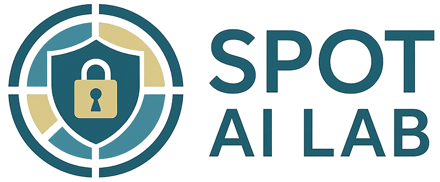

Bio
| 2024–now | Asst. Prof | MBZUAI |
| 2019–24 | PhD | U. Waterloo |
| 2016–18 | MSc | RWTH-Aachen |
Guten Tag, I’m Nils 👋. I’m an Assistant Professor of Machine Learning at MBZUAI in Abu Dhabi leading the Secure, Private, Open and Trustworthy  AI lab. I have received Waterloo's 2024 Alumni Gold medal and my PhD thesis received the Top Mathematics Doctoral Prize.
My research focuses on (i) secure, (ii) private and (iii) strategic machine learning. I am interested in researching methods to make large ML system accessible to millions of users in a responsible way. This includes topics such as content watermarking, privacy-preserving inference, AI safety & security and developing conversational agents with social intelligence.
I am currently teaching ML8502 (Machine Learning Security). In Spring'25, I taught ML807 (Federated Learning) and in Fall'24 I taught ML818 (Trustworthy Machine Learning).